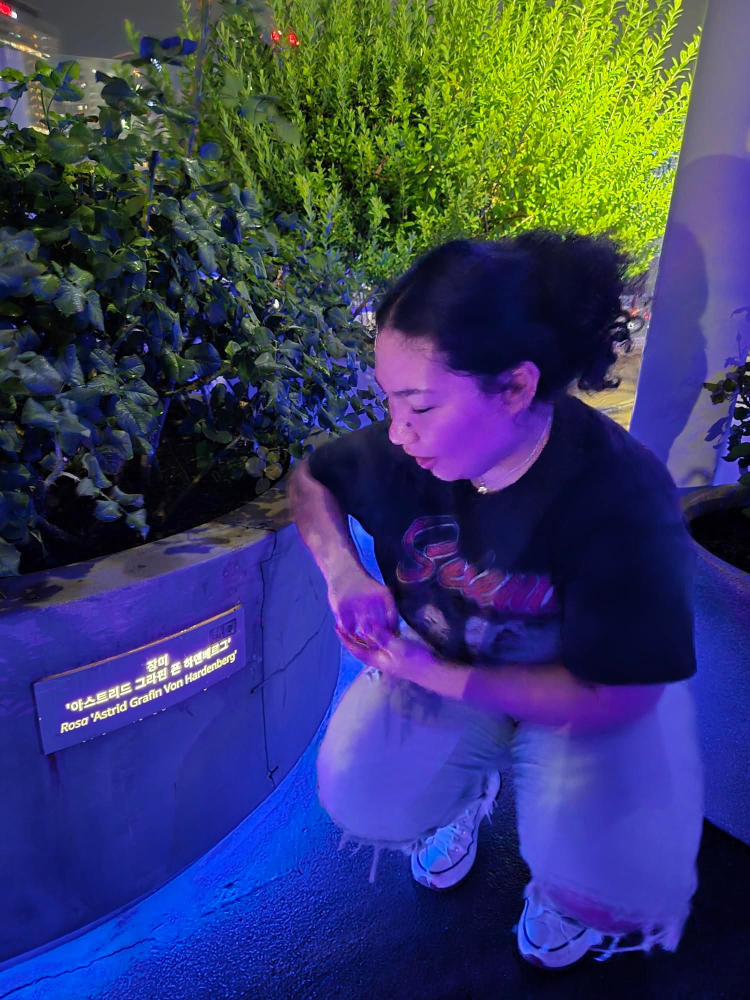
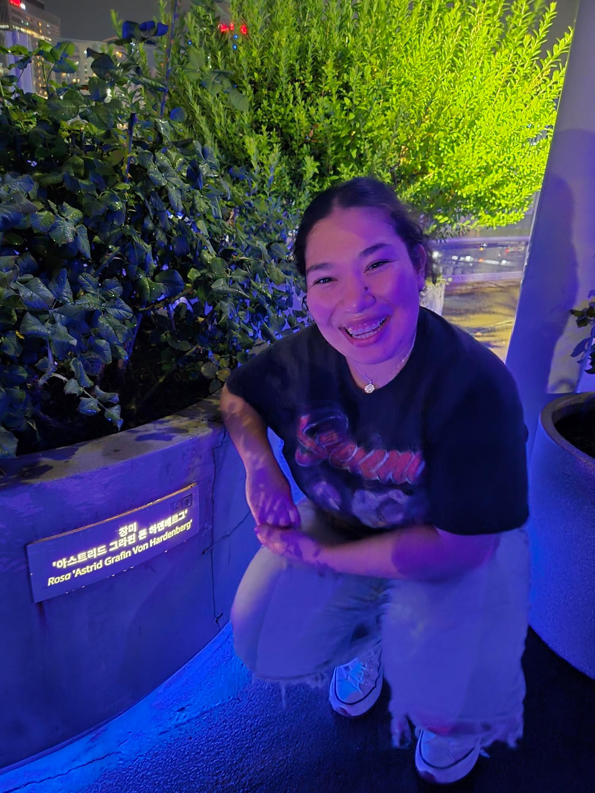
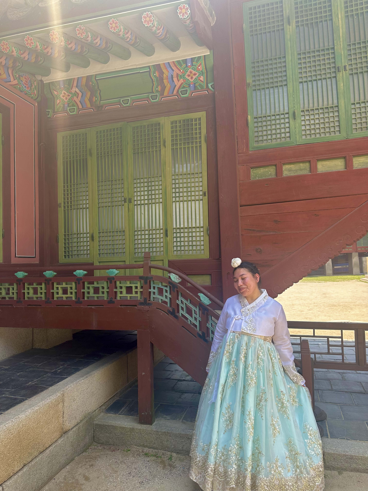
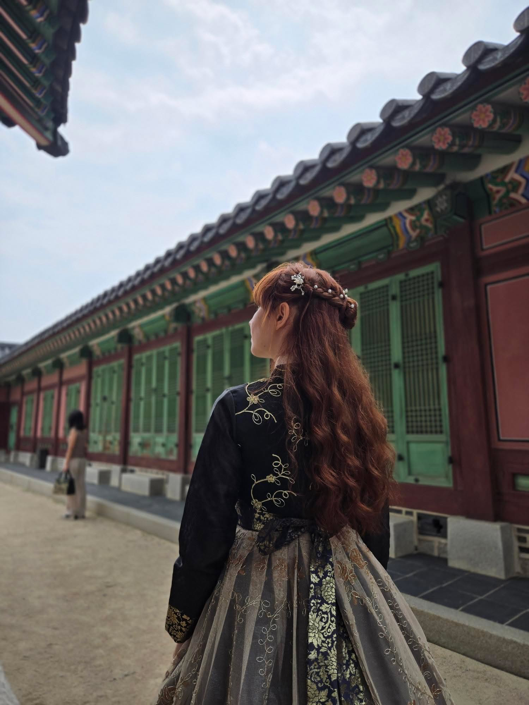
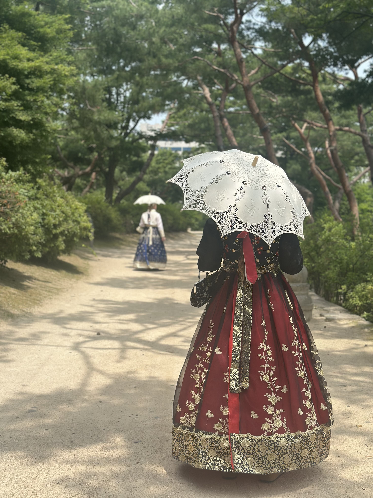

Namsam Tower
It's not as big as expected?
Namsam Seoul tower was not directly related to the Korean or Imjin war,
But it was built at the highest point in Seoul. This tower is approximately
460 feet above sea level. This tower is actively being used to provide 48%
The country's broadcasting to stations such as KBS. The tower features an
observation deck that can be visited if a ticket is purchased.
Next to the tower, you can also visit the Love Lock of Seoul Tower, where couples
go to attach a lock to the railing.
I visited this attraction
because it provides a panoramic view of the city. From the tower,
you can view the Han River and part of the Seoul wall. The
Seoul wall was built during the Joseon Dynasty to protect the city.
On the windows, there are indicators that tell you how far
away cities are from the point and direction in which you are
standing.
Demilitarized zone (DMZ)
The border between the North and the South
This area can be considered the border between
North and South Korea. The border spans 160 miles
from sea to sea. The DMZ is not a physical border,
but it spans two kilometers from the military line of
demarcation.
I visited the DMZ with
a tour group composed of 11 people. The tour group met
up at Hongik Station at 7 am. It was 40-50 minutes to the
first stop, Imjinak. This is where we had to go to get
our tickets to enter the DMZ, but we also went around
with our guide, who informed us that Imjinak was created
for the time of reunification.
From my understanding,
there were high hopes of reunification of the Koreas long ago,
and there still are because of how our guide spoke.
She reminded us that South Korea recently elected
a new president, and she stated that he is more
lenient with North Korea.
Changes to the DMZ
Present vs A Couple Years Ago
According to my guide, the DMZ is not what it used to be years ago, because of an incident between the North and the South. The area used to be more tourist-friendly in terms of of what is and is not allowed. Our guide told us that the repercussions stemmed from the US and South Korea wanting to trim a tree, but the North did not agree. This disagreement escalated when U.S soldiers were trimming the tree and were killed by the North Koreans. This tragic incident led to both sides are separated with no contact. Although our guide shared that she thinks that the tensions will start to ease with the new president, and the restricted areas will gradually start to open, later this year.
Imjinak
The First Stop of the Tour


Imjinak is a resort that was built in 1972 when the North and the South
agreed to a ceasefire. This area is located a couple of kilometers from
The DMZ is surrounded by monuments and historical memorabilia.
Here you can find the peace bell, which was made as a goodbye to the 20th century.
You can pay to ring it.
The “Old Steam Locomotive.”
This was a train used by South Korea and the United States to
transport supplies during the Korean War. It looks like this
because it was captured by North Korea during a shipment,
and instead of surrendering the weapons and supplies
on board the North, they decided to destroy the
merchandise themselves.
The Mangbaran Altar was created
for the North Korean defectors who could not travel to their
hometowns and pay their respects to their ancestors during
major holidays.
Background on the Unification Bridge the DMZ
A Story Told to us by the Guide
To get to the DMZ, you must cross the Unification Bridge, which has a very heartbreaking origin. The unification bridge was funded by the CEO and founder of Hyundai, who was originally from North Korea. Chung Ju-yung left the North when he was young because his family was extremely poor, and he wanted to take them out of poverty. Unfortunately, when he made his millions, he could not freely travel back and support his family. When the bridge opened, he took 1,001 cows with him in a parade for this daily and the North Korean government. This was done because to leave the North, he stole one of his father's cows and used the earnings to go to Seoul. Although he was allowed to enter and see his family for a bit, the moment was fleeting because he could not stay for long.
Entering the DMZ
Crossing the Unification Bridge
Before entering the DMZ, we were asked to sign our names on a sheet so that the soldiers who boarded our bus could find us more easily when looking at our passports. The soldier looked at everyone's identification and counted the number of people on the bus twice. This process happened for every vehicle that entered the DMZ, but I found it to be efficient.
The Third Infiltration
Our Second Offical Site
Once inside the DMZ, we headed to the 3rd infiltration tunnel. This
is one of four known tunnels that North Korea dug by hand to reach
the South. Unfortunately, there were no pictures allowed in the tunnel.
To get to the tunnel,
there was an incline of 13 degrees that was 100 meters (about 328.08 ft)
long. It was very cold and wet because it was below ground.
Most people had to crouch because the tunnel was not tall in stature.
I did not have this issue, but if you are over five feet tall, it
might be uncomfortable for you.
The tunnel is not very wide, so
there is some traffic along the way. Once we reached the end of the tunnel,
there were cameras that showed us past the barrier that protected us.
There was also a small window that you could look through that displayed
real plants that were growing beyond the barrier. At that point,
we were 170 meters (about 557.74 ft) from North Korea.
New Obseratory
The Third Offical Site
After the tunnel, we headed toward the observatory where we could freely look at North Korea. This was the new observatory that was built because North Korea destroyed the first one. Sadly, we could not take pictures of North Korea because if apprehended, the military personnel could delete the picture along with any others they pleased from your phone. This is also where "propaganda" is played for North Korea through very loudspeakers. They play music and the news for them.
"Propaganda Village"
The Last Offcial Cite
When the Koreas came to their agreement for a “truce,” they decided that there would be two villages for each country. We went down to the Southern one, which has about 200 inhabitants and cannot be inhabited by just anyone. This village has a curfew, and only about 12 kids attend the international school there. Contrary to the South village, the North village is not inhabited but is made to look as though it is inhabited. The Northern village has fake people and homes with blacked-out windows; you cannot see that from the observatory.
HiKR Ground
Digital Media Museum


HiKR Ground is a tourist attraction that focuses on immersive
digital displays. The name HiKR is derived from the idea that Korea (KR)
welcomes all tourists (Hi). The building is made up of five floors,
but the first and last are information centers. This experience is
completely free and starts on the second floor. The first attraction
features “various media arts” that make good photo opportunities.
The second floor gears more towards the K-pop phenomenon. This floor
featured interactive displays. The third floor featured various
perfumes, and the opportunity to design your known cap.
From looking at their Instagram, the third floor
changes activities often.
The second floor adhered most to the
theme of my Magellan. There were various digital
activities you could interact with. This was achieved with a
screen and a “spray paint can” that was calibrated to the screen.
The next floor was geared more towards how technology is used
in modern times. There was a karaoke set up and a streamer set
up that were open to all.
When I first arrived, it was basically
empty, then a few people trickled in, but it was not crowded at all.
Overall, I would recommend this experience because it is free,
and when I went there was a booth giving out free things if you
posted them on your social media. I got a free portable
charger, fan, and reusable tote.
The Cities
My Overiew and Opinion


While I was in Seoul, I found most places to be accessible
and quite easy to navigate to especially because I stayed
near Seoul Station. Most places were within 20-30 minutes
by metro; for some places, you had to walk, but it was never
long distances. Before I got to Seoul, I did not know what to
expect at all. I thought it would be different. It was more
advanced and orderly.
Myeongdong
was only a couple of stops away from Seoul Station, and there were
a variety of things to do. I recommend visiting Myeong-dong market
for some tasty food. This was one of my favorite places because it
was very modern-looking and had very pretty architecture. I especially
loved the station itself because the outside looked round and very
reflective, as shown in the picture. I recommend going to Mimi line
and Nyu Nyu for souvenirs. Gangnam had the most skyscrapers.
This is because this is where many people work.
I found Gangnam to be calm. Although when I was there
was an event for kids that promoted reading. Although it was not
so different from other cities. I think when people speak of
technological advancements,they mean the convenience that
you are exposed to.
Libray Observation
Starfeild Library vs Seoul Metropolitan Library


I visited two Starfield libraries. One was in Suwon and the
other in Gangnam. I was surprised that the library was in the
COEX mall. The library was three floors high but did not take
up the whole floor. Each section was most comparable in size
to a larger store. This library was not like a typical library
and seemed to be more of a tourist attraction. It was
a functioning library that held a variety of books. Although
I found out that only the first couple of shelves near the
ground had real books, and the higher shelves that reached
the ceiling only held spines.
I really enjoyed the design
of the mall; it was very modern, and I understand why it was an
attraction. Personally, I could not imagine trying to do any work
there. Even though throughout the library there were places where
you could sit and work, I think that because of the location (mall),
it was very loud.
In terms of technological advancement,
it was more modern than other libraries.
I think this can only be said about the architecture,
though, because I do not think the book-checking process
is any different. I did note that there was a station
where you could use iPads. Overall, I do not recommend
it for focusing and doing work, but to visit and take
pictures it is gorgeous, and you should visit.
I visited the
Seoul Metropolitan Library for my comparison. This building was
much bigger and did its job of creating an environment meant
for working and productivity. I really enjoyed the one section;
it sort of resembled the Starfield library in this regard.
Both libraries use stairs as seating.
While I was in Korea,
I met an architect, and I asked her if stairs worked in the
Starfield library, and she said, “Stairs will always add to a room.”
I live by this now.
Cafe Culture
You Should Visit More Cafes
I enjoyed the cafe culture in Seoul. I was not actively seeking
out new and interesting places to visit, but I did make it a
point to visit the ones within walking distance of my lodging.
I was impressed by the number of cafes there were and how late
they stayed open. This was because most cafes did not open till noon.
I cannot focus in my room or dorm to do any type of work,
so I enjoyed being able to go to cafes to do my Magellan.
I never found them distracting and found it quite easy to
lock in and do my work. I highly recommend visiting cafes
in Seoul, especially the themed ones.
Seullo 7017
My Favorite Place in All of Seoul


My favorite part of all of Seoul is called Seoullo 7017.
This area was once a highway that has been converted into a park.
It is quite long, featuring thousands of plants, each is displayed
with both its scientific name and Korean name.
I found this to
be such a wonderful way to add greenery to such an urbanized city.
This structure allows many people to get their daily steps and
human interaction. Along this path, you can find a piano,
trampolines, and cafes with seating areas.
I would frequently take this route when I had to take a
bus instead of a metro. To get to the bus station,
I would have to get to one of the staircases or elevators
that were marked by numbers. I loved this walkway and would
frequently walk it even if it were not on my way home.
Astrid Gräfin von Hardenberg
My Favorite Coindidence
 I was walk one night and just happened ot see my name.
Gyeongbokgung Palace
The Northern Palace


This palace was built in 1395 and was primarily used during
the Joseon Dynasty. This palace was in use until the Japanese
invasion in 1592, when it was destroyed. The palace was not
reconstructed till 1867, approximately 270 years after the
Imjin War had ended. When it was finally restored, the
palace gained new buildings, most notably the Okhoru Pavilion,
where Empress Okhoru was assassinated in 1895. Since its
restoration, the palace has changed a couple of times for
educational purposes. The palace now features a museum.
At Gyeongbokgung Palace, you can witness the changing of the
guard. This ceremony is said to be as accurate as possible,
as the original ceremony. This demonstration features
traditional instruments and clothing. They even use fake
beards, but that is just speculation as an audience member.
When you are there are so many people because this demonstration
only occurs twice a day at 10:00 am and at 2:00 pm. Before the
demonstration begins, you can also see them practice for the
ceremony. When the show begins, you will hear drums and
marching as they approach the designated performance area.
As with any military unit, there is a commander who instructs
his soldiers. It is remarkably interesting to witness. Also remeber
Before the show starts, you can take pictures with the
guards standing near the entrance gates. efore the
show starts, you can take pictures with the guards
standing near the entrance gates.
Changdeokgung Palace
The Eastern Palace


This palace is referred to as the palace in
the East, while Gyeongbokgung is the northern palace.
Like its Northern counterpart, this palace was
destroyed during the Imjin War and was reconstructed
in 1610. Changdeokgung Palace features two tours,
the first featuring the main hall, while the
other focuses on the special garden. The garden
tour is very sought after because of its
limited slots, so be sure to get there early!
You can also rent a Hanbok near this palace,
but there are more options near Gyeongbokgung Palace.
Compared to Gyeongbokgung Palace, I found this one to
be less crowded, allowing you to take pictures without
others in the background.
Hanbook History
If you visit the Palaces wearing Hanbok, we will have free entry!
   Hanbok is the name of traditional clothing, but it
also means Korean clothing. For women, the Hanbok
is composed of a jacket and a skirt. The skirt
is like overalls because it goes over the shoulders.
The jacket is long-sleeved and is cropped. The
Hanbok for men is a jacket and pants, but it
still shares the same design and style.
The
Hanbok dates back over 2,000 years, although most
modern Hanboks are modeled after the Hanbok that
existed during the Joseon Dynasty. If you have
ever seen a historical Korean drama, you may
have noticed this garb before.
I rented this dress
near Gyeongbokgung and Changdeokgung palaces.
There are many places to rent from, and it is
highly affordable. You can either book online
via websites such as Klook or go in person and
ask around. The place I rented from rented the
dress to me for three hours, and I got my hair
braided for free and an umbrella for free.
Hanbok comes in many colors but remains the same
style. I decided on mint green because I wanted
the Hanbok to match my shoes.